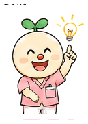

PC から実績の時刻を合わせる
部品は 1 つ（「実績の時刻を合わせる」枠）、入口は 2 つ。訪問モニター = その日の流れの中で気づいたとき ／ 打刻履歴 = 期間でまとめて洗い出すとき。
新 の印と ピンクの点線 = 今回足す部分
理由は聞きません（誰がいつ合わせたかは記録に残る）
予定は動きません・読み取った時刻も消えません
操作できるのは管理者だけ
A
訪問モニター（当日）詳細パネルに「実績の時刻を合わせる」枠が出る
- 訪問のカードを押すと、右の詳細パネルの下に「実績の時刻を合わせる」枠（打刻履歴の詳細と同じ部品）。
- 到着は時刻を入れて保存。調整したあとは「読取時刻に戻す」で元に戻せる。
- 退出の読み取りが無いときは「退出を 13:48 で記録する」。候補（予定の終わり／到着＋予定の長さ／次の訪問の 10 分前）をひと押しで入れられる。
- 合わせた訪問のバーには「調整」、読み取り無しで入れた時刻には「手入力」の印。

訪問モニター
今日の訪問の進み具合（QR の到着・退出）
▲ 要対応 1件
要確認鈴木 和子様看護師A ・ 長く滞在中（117分）
鈴木 和子様
訪問中看護師A ・ 予定 13:00–13:35（35分）・ 医療
要確認予定の長さを大きく超えて滞在中です（滞在 117分）。退出の読み取り忘れかもしれません。
予定時刻13:00 – 13:35
到着（QR/GPS）13:13
退出（QR/GPS）—
滞在時間117分（訪問中）
登録住所からの距離12m
実績の時刻を合わせる 新
お宅に着いてから QR を読み取るまでに時間があったときや、退出の読み取りが無いときに、実績の時刻を合わせます。読み取った時刻は消さずに残り、予定は変わりません。
到着
読取 13:13
退出
読み取りなし ・ 退出の時刻を記録できます（記録すると「完了」になります）
ひと押しで入れる
理由の入力はありません。誰がいつ合わせたかは記録に残り、詳細の「時刻の調整」に出ます。
完了（到着〜退出）
訪問中
調整 時刻を合わせた
手入力 読み取り無しで入れた時刻
縦線 = 今（15:10）
決めたいこと Q2 退出のひと押しの候補 = 予定の終わり／到着＋予定の長さ／次の訪問の到着の 10 分前（この順で並べ、真ん中を最初に選んでおく案）。
B
訪問モニター（過去の日 10/3）退出が無い訪問は「退出未記録」と出す
- モニターの日付を前の日に切り替えても、同じ枠で合わせられる。
- 前日以前で退出が無い訪問は、滞在時間を数え続けず「退出未記録」（今は「滞在 2,708 分」のように今の時刻まで数えてしまう）。
- 要対応のトレイに「退出未記録 5件」。押すと一覧が開き、1 件押すと右の枠がその訪問に切り替わる。
訪問モニター
前の日の訪問も、日付を切り替えて合わせられます
▲ 要対応 5件
押すと一覧を開閉 ・ 1 件押すと右の枠が切り替わります
退出未記録 5件（10/3）押すと合わせる枠が開きます
中村 光子様
退出未記録看護師A ・ 予定 14:00–14:30（30分）・ 介護
予定時刻14:00 – 14:30
到着（QR/GPS）14:05
退出（QR/GPS）—
滞在時間 新滞在 2,708 分→退出未記録
実績の時刻を合わせる
到着
読取 14:05
退出
読み取りなし ・ 退出の時刻を記録できます
ひと押しで入れる
完了
退出未記録（前日以前・滞在時間は数えない）
当日は「訪問中」、前日以前は「退出未記録」
決めたいこと Q4 当日は「訪問中」、前日以前は「退出未記録」（滞在時間は数えない）。Q3 到着だけ手入力した打刻なしの訪問も、過去の日なら「退出未記録」。
C
訪問モニター（打刻なし・予定のみ）管理者だけ「到着・退出を手で入れる」
- 到着の QR も読んでいない訪問に、管理者だけ到着・退出を手で入れられる（紙・看護記録の時刻）。
- 2 つ入れて保存すると「完了」。バーと詳細に「手入力」の印が付き、QR の実績と見分けられる。
- 管理者以外（スタッフ）の画面には、この枠は出ない。スマホの規則（本人・7 日以内・到着の読み取りがある訪問）は変わらない。
伊東 誠様
打刻なし（予定のみ）職員B ・ 予定 10:00–10:45（45分）・ 医療
予定時刻10:00 – 10:45
到着（QR/GPS）—（読み取りなし）
退出（QR/GPS）—（読み取りなし）
滞在時間—
到着・退出を手で入れる 新 管理者のみ
QR の読み取りが無い訪問です。紙や看護記録の時刻を入れてください。入れた時刻は「手入力」の印で QR の実績と分けて出ます。
到着予定 10:00
退出予定 10:45
到着だけ入れて保存すると「実施中」（過去の日なら「退出未記録」）。
管理者の画面
上のとおり、詳細パネルに「到着・退出を手で入れる」が出る。スタッフ（管理者以外）の画面
この枠は出ません（見るだけ。「打刻なし（予定のみ）」の表示のまま）
決めたいこと Q6 印は「手入力」。打刻履歴でまとめて入れたものを「手入力（まとめて）」と分けるかどうか。
D
打刻履歴（記録 → 打刻履歴タブ）まとめて退出を入れる
- 絞り込みに「打刻なし」を足す（C の手入力への入口。行の詳細に同じ枠が出る）。
- 「退出なし」で絞った一覧の行にチェック。選ぶと上に「3 件を選択中 ・ まとめて退出を入れる」。
- 決め方を選ぶ（到着＋予定の長さがおすすめ／到着＋○分／予定の終わり）→ 訪問ごとに入る時刻を確かめて実行。
- 1 件ずつ同じ仕組みで入れ、終わったら「3 件入れました・失敗 0」。失敗したものは理由つきで残る。
訪問記録
QR の到着・退出の記録を期間で見る
「まとめて退出を入れる」を押したときのダイアログ（「実行」を押すと結果「3 件入れました・失敗 0」に切り替わります。キャンセル/閉じるで最初に戻ります）
まとめて退出を入れる
選んだ 3 件の訪問に、退出の時刻を入れます。入れた時刻には「手入力」の印が付きます。
退出の決め方
入る時刻の確認
| 日 | 利用者 | 職員 | 予定 | 到着 | 入る退出 |
|---|
1 件ずつ記録します。理由の入力はありません。
決めたいこと Q1 まとめて入れるときの既定 = 到着＋予定の長さ（予定 35 分なら 35 分）。到着＋○分・予定の終わりも選べる。